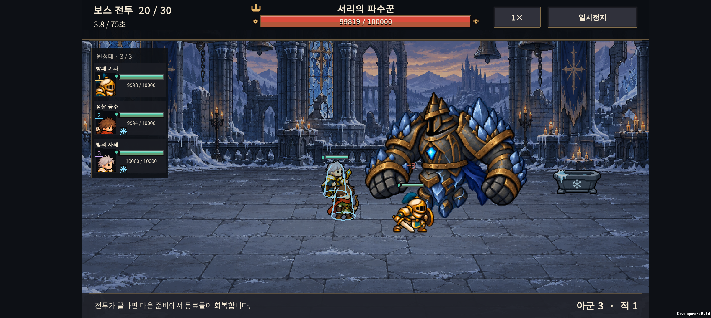
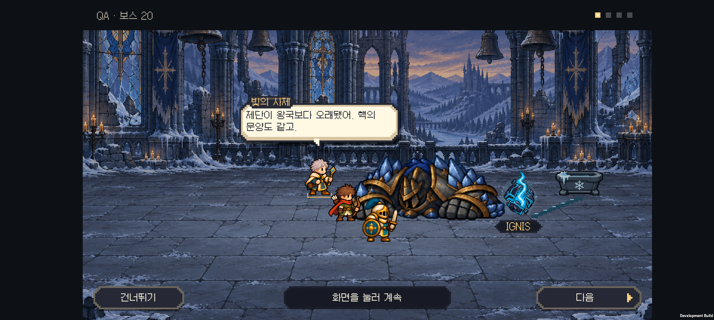

v0.64 서리 파수꾼 · 체격과 얼음 색감
2026-11-01 · IGNIS: ASHEN OATH
서리 파수꾼의 넓은 어깨와 큰 주먹을 되살리고, 얼음만 차분한 회청색으로 조정했다. SPUM은 비교 후 사용자가 도입하지 않기로 결정했다.
변경 내용
- v0.63은 높이가 같아도 대기 자세의 폭이 약 287이어서 기존 보스보다 좁고 약해 보였다. v0.64는 넓은 갑주·주먹을 가진 새 전신 그림으로 바꾸었다. 기본 높이 290은 유지하고, 대기 자세 표시 폭은 약 371이다. 가로로 늘린 변형이 아니라 새 그림의 비율이다.
- 사용자가 선택한 새 체형을 기준으로 얼음의 강한 청색 채도를 낮췄다. 어두운 철갑·황동 테두리·남색 천과 가슴 핵의 대비는 유지하는 방향이다.
- 대기·공격 4자세와 패배 4자세를 각각 통째로 그린 8자세 시트다. 팔을 분리해서 움직이지 않는다.
- 이전의 패배 처리도 유지한다. 힘이 빠지고 내려앉아 두 주먹으로 지면을 짚으며, 마지막 자세는 전투 후 대화에서도 유지한다. 모션 줄이기에서는 즉시 마지막 자세를 표시한다.
- 전투 체력·피해·사거리·간격·연구·보상 수치는 변경하지 않았다.
아트와 제작 방식
새 서리 보스 시트 · 내장 image_gen 프롬프트 기록 · 공통 아트 기준

내장 image_gen으로 생성·편집했다. 최종 PNG와 알파는 도구 출력 그대로 저장했으며, 런타임은 자세별 영역과 기존 투명 경계 처리를 사용한다. 1087×1447 원본을 Point 필터와 최대 1024 설정으로 임포트한다.
SPUM 검토 결과
공식 상품 설명·위키·갤러리를 비교했다. 파츠 재사용과 공통 동작은 반복적인 아군 제작에 유리하지만, 현재 그림체·특수 보스·기존 프레임 규약을 그대로 대체하는 도구는 아니다. 사용자가 도입하지 않기로 결정했으므로 구매·설치·3종 실험은 진행하지 않았다. 현재 화풍을 유지하면서 장비 수·손 위치·체격·도트 표현의 일관성을 계속 검수한다.
검증
- Unity 6000.3.24f1 Android 빌드 성공. 24개 전투 프레임의 표시 범위·기본 높이·패배 시 접지·모션 줄이기 검사를 통과했다.
- 기존 전장 대화 609개 검사/28개 시나리오와 지역 연출·엔딩 214개 검사를 통과했다.
- Galaxy Buddy2에서 1×·2×, 모션 줄이기 켬·끔의 4조건을 확인했다. 각 조건에서 일반 공격 4회, 서리 고유 공격 1회가 발생했고 최종 패배 프레임은 21이었다.
- 24개 화면과 48초 영상을 저장하고 전장 위 얼음 색감·몸체 크기·내려앉는 자세를 확인했다.
- 대화 화면에서 실제 다음·건너뛰기 터치를 확인했다. 테스트 전 저장 파일과 PlayerPrefs를 바이트 단위로 복원하고 일치를 검증했다.
빌드 정보 · Buddy2 공격·패배 영상 · 모션 단계 모음



체력을 높이고 정해진 시점에 보스를 쓰러뜨린 격리 시각 QA이며, 일반 원정의 승률·난이도 측정은 아니다. HTML은 소스와 연결 파일을 점검했으며 브라우저 렌더링 검증은 포함하지 않는다.
다음 작업
나머지 보스의 색감과 전투 종료 자세를 실제 전장에서 비교한다. 특히 정원 보스의 대화 중 자세를 먼저 검토한다. 이후 처음 하는 사람의 원정 플레이와 출시 전 성능·저장·사운드 검증으로 이어간다.